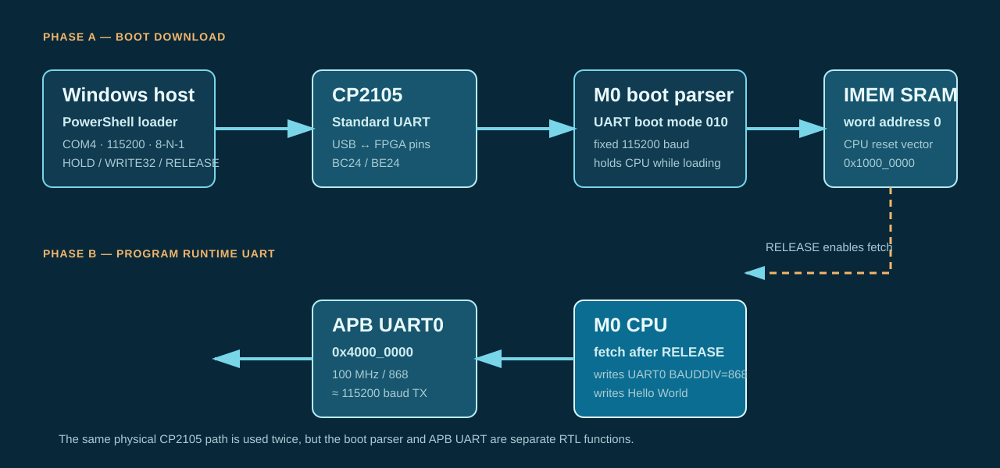

1. Assemble and link
riscv64-unknown-elf-gcc \
-march=rv32ic -mabi=ilp32 \
-nostdlib -nostartfiles \
-Wl,-Ttext=0 -Wl,-e,0 -Wl,--no-relax \
-Wl,--build-id=none \
-o UART-HELLO-115200.elf \
UART-HELLO-115200.SM0 / VCU108 / PHYSICAL BOARD SMOKE
A retained, end-to-end board record: Windows sends a program over UART, M0 loads it into instruction SRAM, the CPU executes it, and the program returns Hello World through the FPGA UART.
01 / WHAT HAPPENED
The CP2105 Standard serial port is first the host-to-boot-loader transport, then the CPU program’s runtime UART output path. They share physical pins but are distinct RTL functions and protocol phases.

02 / BOARD AND HOST CONTRACT
| Item | Required value | Why it matters |
|---|---|---|
| FPGA target | AMD VCU108 / xcvu095 | The M0 wrapper derives a 100 MHz SoC clock from the board 300 MHz system clock. |
| Bitstream | eriscv_m0_vcu108_wrapper.bit | The configured FPGA contains the M0 SoC, boot parser, UART, and board pin bindings. |
| UART USB port | CP2105 Standard port, observed as COM4 | The Enhanced port (COM3 in this session) is the board system controller, not FPGA UART. |
| FPGA UART pins | BC24 RX, BE24 TX | They connect the FPGA wrapper to the CP2105 Standard UART path. |
| Boot mode | RTL value 3'b010, selected before reset | It selects UART boot. Boot source is sampled at reset; changing the DIP alone does not restart the loader. |
| Host framing | 115200 baud, 8 data bits, no parity, 1 stop bit, no flow control | The boot parser uses this fixed serial contract. |
Configuration-session context. The image was eriscv_m0_vcu108_wrapper.bit, SHA-256 cb868276093b4cc3da102d1db26c7cf24f7004e5806fe06e4a8f878649fa23a0. Vivado identified xcvu095_0 (IDCODE 0x13842093) as ES2-compatible and required the session-local set_param xicom.use_bitstream_version_check false waiver before programming. This is a tool-version workaround, not a silicon-revision compatibility claim. No Vivado soft debug core is expected because M0 uses a custom BSCANE2 DTM rather than ILA/VIO.
Press and release CPU_RESET after selecting UART boot, then transmit the image. The exact physical DIP on/off polarity remains a board-session detail; the logical RTL value is the portable contract.
03 / CREATE THE BOARD IMAGE
The board-specific program is deliberately separate from the fast simulation test. It programs the runtime UART divisor for the actual 100 MHz FPGA clock.
riscv64-unknown-elf-gcc \
-march=rv32ic -mabi=ilp32 \
-nostdlib -nostartfiles \
-Wl,-Ttext=0 -Wl,-e,0 -Wl,--no-relax \
-Wl,--build-id=none \
-o UART-HELLO-115200.elf \
UART-HELLO-115200.Sriscv64-unknown-elf-objcopy \
-O verilog --verilog-data-width=4 \
UART-HELLO-115200.elf \
UART-HELLO-115200.wordstr -s '[:space:]' '\n' \
< UART-HELLO-115200.words \
> UART-HELLO-115200.memThe boot tool accepts standard $readmemh address directives and one hexadecimal word per line.
Source: UART-HELLO-115200.S. Generated image: UART-HELLO-115200.mem. The image begins at word address zero, which maps to the CPU boot address 0x1000_0000.
04 / UART BOOT TRANSACTION
send_uart_boot.ps1 uses Windows System.IO.Ports.SerialPort; it does not use Vivado, OpenOCD, or a preloaded FPGA memory image.
| Order | Opcode | Payload | Effect |
|---|---|---|---|
| 1 | 0x03 HOLD | None | Stops instruction fetch before changing instruction memory. |
| 2 | 0x06 RESET_ADDR | None | Sets the boot write pointer to word zero. |
| 3 | 0x05 AUTO_INC | 0x01 | Advances the word address automatically after each write. |
| 4 | 0x02 WRITE32 | One 32-bit little-endian word, repeated | Writes the 61 words of the program into M0 instruction SRAM. |
| 5 | 0x04 RELEASE | None | Enables fetch; CPU begins executing at 0x1000_0000. |
# From the M0 VCU108 directory:
powershell.exe -NoProfile -ExecutionPolicy Bypass -File .\tools\m0_uart.ps1 `
-Mode Boot -Port COM4 `
-Image .\tests\UART-HELLO-115200.memThe loader opens COM4 at 115200 baud, 8-N-1, no flow control; transmits 310 total protocol bytes; waits for the wire time; releases fetch; and keeps the port open to capture the program’s runtime output. Use -DryRun to parse an image without opening COM4. send_uart_boot.ps1 remains a compatible Boot-mode wrapper.
05 / HELLO WORLD AT RUNTIME
| APB UART0 register | Address | Program action |
|---|---|---|
| TXDATA | 0x4000_0000 | Write one byte after TX-ready is set. |
| STATUS | 0x4000_0008 | Poll bit 0 until the transmitter can accept a byte. |
| BAUDDIV | 0x4000_000c | Write 868. |
| CTRL | 0x4000_0010 | Write 3 to enable runtime UART operation. |
The VCU108 wrapper clocks the SoC at 100 MHz. 100,000,000 / 868 = 115,207.37 baud, an error of approximately +0.0064%, well within normal asynchronous-UART tolerance.
?The regression image writes divisor 8 to shorten serial simulation. At 100 MHz it becomes about 12.5 Mbaud, so a Windows receiver set to 115200 cannot decode the runtime data correctly.
06 / OBSERVED RESULT AND INTERPRETATION
M0 UART boot: 61 words, 310 bytes, 115200 baud
M0 UART boot: transfer complete; instruction fetch released.
M0 UART runtime output:
Hello WorldHost USB serial TX, CP2105 Standard routing, boot-parser reception, instruction-SRAM writes, fetch release, M0 execution, APB UART programming, FPGA TX, CP2105 receive, and Windows serial capture.
Private BSCANE2/RISC-V DMI, GPIO, SPI, timer/PLIC behavior, persistent boot media, all boot errors, and a formal board-release campaign.
The full dated session record, bitstream hash, and configuration-JTAG context are retained in the M0 VCU108 debug record.
07 / REUSE THE LINK FOR DEMOS
Double-click open_uart_console.cmd in Windows Explorer. It starts the local-only Web Serial console and opens it in the default Chromium browser.
Select the CP2105 Standard UART in the browser chooser, keep 115200 baud for boot, choose a compatible runtime .mem image, then click Boot image. The bundled Hello World image proves boot and runtime TX; interactive terminal behavior depends on a separately supplied monitor image.
The page runs only through a loopback local server and requires explicit browser permission for the serial device. It cannot select COM4 silently or control the physical boot DIP/reset.
m0_uart.ps1 remains available for automation and non-browser environments. The browser page is a local serial front end for compatible images.
This is a raw board transport console, not a full VT100 terminal. It intentionally omits local echo, escape-sequence parsing, and line editing; those can be added when a demo firmware requires them.
RELATED EVIDENCE